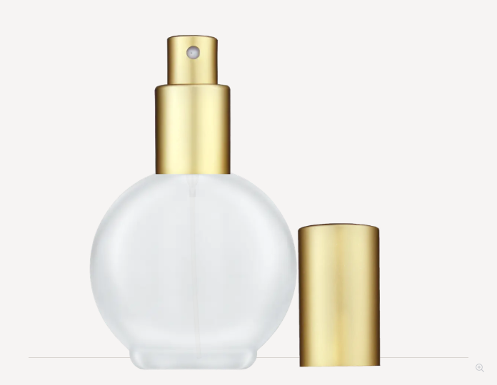
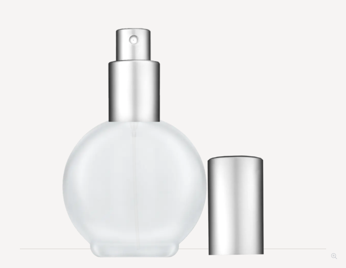
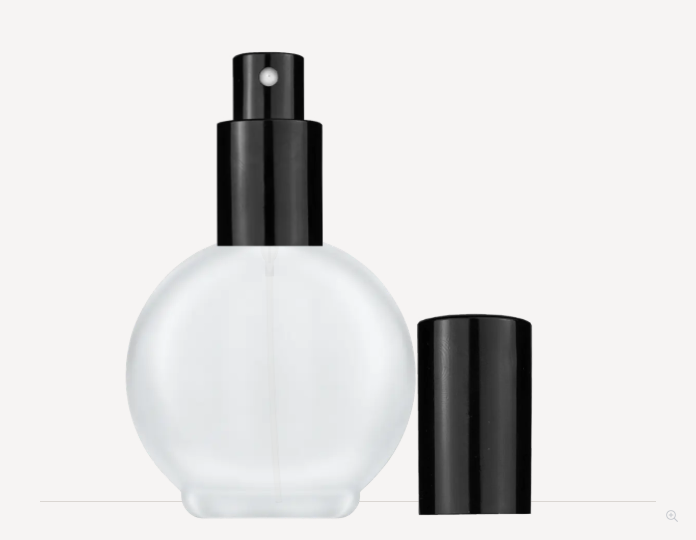
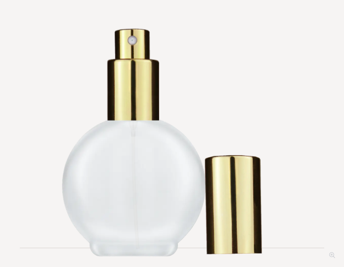
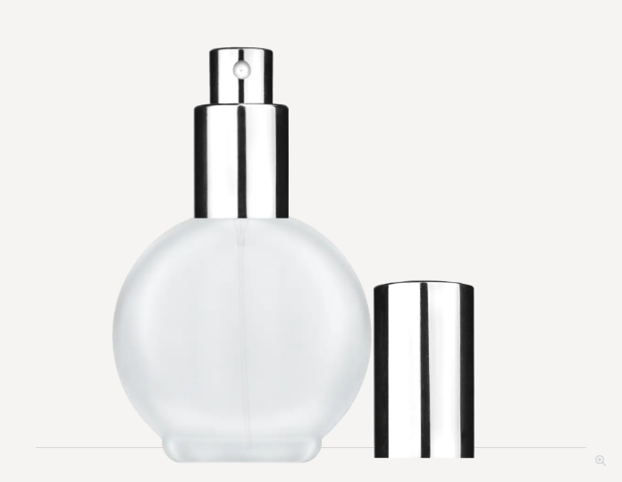

GBRndFrst78SpryMtGlround-78ml-18-415 · Frosted · 1.5 mm tube ODExploded · Cap on · Mobile
GBRndFrst78SpryMtSlround-78ml-18-415 · Frosted · 1.5 mm tube ODExploded · Cap on · Mobile
GBRndFrst78SpryShnBlkround-78ml-18-415 · Frosted · 1.5 mm tube ODExploded · Cap on · Mobile
GBRndFrst78SpryShnGlround-78ml-18-415 · Frosted · 1.5 mm tube ODExploded · Cap on · Mobile
GBRndFrst78SpryShnSlround-78ml-18-415 · Frosted · 1.5 mm tube ODExploded · Cap on · Mobile